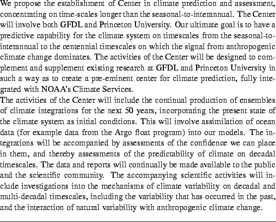

Climate Predictability and Variability in the Presence of
Anthropogenic Climate Change:
A Proposal for a Princeton Climate Center
INTERNAL USE ONLY
THIS DRAFT PREPARED BY G. K. VALLIS

The simulation and understanding of natural variability on
multi-decadal scales intersects the issue of human induced climate
change in a variety of ways. It begets the question of whether
predictions1
of climate a decade or more in advance can be improved by
initializing and predicting the evolution of natural variability on
these time-scales. This question motivates our proposal. Our goal is
the creation of a prediction/assessment capability that seamlessly
connects the seasonal-to-interannual (SI) timescale to both natural and
anthropogenic changes on longer time scales. Our explicit goal is to
provide predictions of climate and climate change over the next 50
years, incorporating estimates of all likely relevant future forcing
terms, and initializing the state of the climate system with observed
variables. The forcings will include an array of greenhouse gases,
with an interactive carbon cycle, as well as statistically based
estimates of the effects of future volcanic activity and alteration
of the land surface, for example by deforestation. The initial states
will include, in particular, the current oceanic state as observed by
a network of floats and by satellites. Our predictions will
ultimately be based on an ensemble of model integrations, and so will
be probabilistic in nature, with a distribution of predicted states
determined by the uncertainty in the initial conditions and model
errors, filtered and amplified by the natural variability and
unpredictability of the climate system. The quantification of
climate predictability and variability will be a key element
of the Center.
Our model results, and the interpretation of these results, will be
made available via the publication of annual or bi-annual
assessments, or reports, and periodic briefings to the interested
community. In addition, we propose to establish a state-of-the-art
web site for the dissemination of both the raw model data and the
processed and interpreted data. The effort to build and maintain such
a site will of course be substantial, but will be the most effective
way of communicating our results to the scientific community and to
the general public. [Software developed at PMEL (the `Live Action
Server') will help in this regard, and Steve Hankin, the leader of
this effort, has expressed a willingness to contribute.] In summary,
we seek to be the leading provider of accessible and scientifically
credible climate predictions in the US. We envision that such
information will be invaluable to those performing impacts studies
and those involved in policy, in addition to the climate change and
IPCC communities. The Center will build on expertise at both GFDL and
Princeton University. It will interact with and adjoin the existing
research groups at GFDL, and the Carbon Modelling Consortium (CMC) at
PU, and it will interface with observational and data analysis
programs elsewhere (e.g., AOML, NODC). We intend and expect that the
Center will play an integral role in NOAA's Climate Services.
The following section briefly describes the scientific problems
associated with such an endeavour, and is followed by a description
of the proposed activities (see also fig. 1).
The predictability of any system is normally defined in terms of how
well one can predict, or forecast, the future state of the system,
generally compared to some prior estimate that one can obtain
trivially, like persistence or climatology. Daily weather is regarded
as unpredictable beyond a couple of weeks because most forecasts
(numerical or other) for that time show little more skill than
climatology. Weather is unpredictable because it is a chaotic system,
and therefore unavoidable errors, from whatever source, amplify over
time. In particular, the combination of finite errors in the initial
conditions and imperfect models degrades the skill of weather
forecasts, and it is the goal of centers such as ECMWF and NCEP to
extend the useful weather prediction time out to the de facto
theoretical maximum.
The climate system as a whole may be much more predictable than daily
weather, because many components (such as the ocean) vary much more
slowly, and these essentially provide slowly varying boundary
conditions for the atmosphere. On a daily timescale the
variability of weather is sufficiently large that a detailed
knowledge of these boundary conditions provides only a very small
increase in skill: essentially the signal to noise ratio is very
small. However, this does not necessarily hold on longer timescales;
the signal to noise ratio improves and the average weather may indeed
be more predictable than a climatological prior if the state of the
ocean is known. Indeed on the seasonal-to-interannual timescale
there is evidence that numerical forecasts can be made that improve
on climatology (Stern and Miyakoda 1995).
Some of the source of this skill arises from predicting the
conditions of the tropical ocean, and the effects this has on the
global atmosphere.
It is the still longer timescales that concern us here. Different
physical and dynamical processes dominate at the various timescales
involved, and the way in which predictability is judged consequently
must differ. It is useful to identify three distinct regimes:
- 1.
- The seasonal-to-interannual timescale, on which the forecast
problem is largely an initial value problem. Skill resides in
predicting the atmospheric response to low-latitude SST anomalies,
and thus the prediction of El Niño events is particularly
important. Soil-moisture and surface albedo are also important
components of initial conditions that affect seasonal skill.
- 2.
- A longer, decadal-to-interdecadal, timescale on which there is
still significant natural variability, likely with origins in the
ocean and perhaps involving coupled ocean-atmosphere modes in the
tropic and/or extra-tropics. Such long-term variability may also
arise from variability of frequency and intensity of El Niño
events.
- 3.
- The timescale at which the response to greenhouse gases
dominates that of natural variability. This is uncertain, for some
current models indicate this occurs on a decadal-to-multidecadal
timescale.
Effort in the community has focused largely on the first and third of
these. For example, one of the goals of the Experimental Prediction
Group at GFDL is to understand predictability at the
seasonal-to-interannual timescale, and the IRI at Lamont-Doherty
concentrates on forecasts and their associated impacts at this
timescale. The scientific problem is largely an initial value one. In
contrast, in most global warming scenarios the precise initial state
of the climate system has not been regarded as of first-order
importance, and for centennial timescales this may in fact be
appropriate. In contrast to either of these, for the
decadal-to-multidecadal timescale both natural
variability (and therefore the initial conditions of the climate
system) and the forced response to increasing greenhouse gases
can be expected to be important. It is the interaction of the initial
value problem and the forced response that is central to our proposed
activities. An illustration of the importance of this emerges from
the simulations of Delworth and Knutson (2000). They performed an
ensemble of five integrations over the 20th century, using a climate
model that differed only in its initial conditions. In all five
integrations there is significant natural variability, and one member
of the ensemble provides a remarkably good match to the observed
global temperature record (fig. 2 and
fig. 3.). Undoubtedly there is a degree of cancellation
of error in these integrations, but nevertheless the implication is
that if our models can accurately simulate the climate system
and its natural variability, and if the models can be
initialized with the appropriate initial conditions, we can predict
future climate more accurately than simply as some average response
to increasing greenhouse gas concentrations.
As in many predictability problems, lack of skill is
ultimately caused by:
- 1.
- Imperfect models (including imperfect knowledge of forcing and boundary
conditions).
- 2.
- Imperfect knowledge of initial conditions.
Thus, from a practical standpoint, our overall effort will involve
continually improving the numerical models we use to predict climate,
and initializing our models with the best possible data.
More specifically, we expect that difficulties in climate prediction
will arise from our lack of understanding or ability in the following
areas:
- 1.
- In our ability to initialize the initial state of our climate
models with a sufficiently accurate state of the ocean
and sea-ice, and sufficiently accurate land surface conditions.
- 2.
- In understanding the nature of decadal variability
in the ocean-atmosphere-sea-ice system. Specifically, we must
better understand the nature and causes of various decadal-scale
oscillations in the climate system, which in turn requires:
- (a)
- Understanding and modelling the mechanisms determining the
evolution the state of the ocean (e.g., SST anomalies) and sea-ice.
- (b)
- Understanding and modelling the effects of such SST and sea-ice
anomalies on the state of the atmosphere.
Furthermore, because we cannot realistically expect that our models
and data assimilation will ever be perfect, we must quantify the
nature of climate variability that has occurred in the past, from all
possible causes, in order to gain an appreciation for what might
occur in the future.
- 3.
- In understanding and predicting the likely future course of the
radiative forcing functions of the atmosphere, including sulfur and
aerosols. The variability of both the terrestrial and marine
components of the carbon cycle are major factors in this.
- 4.
- In understanding which components of the climate system are
predictable, and quantifying the level of predictability we
might attain.
These issues will now each be discussed in more detail.
On timescales beyond the seasonal, the signal in the climate system
will largely arise from the slowly varying components -- primarily
the ocean and sea-ice, and perhaps the land surface. The dynamics of
the ocean is known to contain timescales of decades (the wind-driven
circulation) to centuries and even millennia (the abyssal
circulation), and thus to capture any climate predictability we must
initialize our climate models with the current state of the ocean.
Less well known (in the context of climate prediction) is how much
inertia resides in the land-surface, in particular soil moisture
content and albedo, but these too must ultimately become part
of the initial conditions.
A number of ocean data sets exist, including the well-known Levitus
data set and the Woods Hole hydrobase data. These can and should be
used to initialize our ocean models, but because the data coverage is
sparse, and some of the data has been obtained over several years, we
also propose to take advantage of new data sets that will be emerging
over the next few years, in particular the Argo float data set, and
SST and sea-surface height (SSH) data from satellites. The Argo
program (Argo 1998, 2000) is a follow-on to the WOCE hydrographic, float
and expendable bathythermograph sampling networks, but uses an array
of relatively cheap, profiling PALACE-like floats (e.g., Davis 1998).
The goal of the program is to have a global array of such floats,
with one float profiling to about 2000 m depth about every 10 days in
every 3-degree square of the ocean, providing measurements of
temperature, salinity, pressure and (from the float trajectories) a
velocity field at the reference depth. All told, about 80,000 T/S
profiles will be taken per year, sufficient to provide a good picture
of the large-scale baroclinic structure of the upper ocean, including
some information below the main thermocline. The floats do not sample
the abyss, but this is both much more uniform than the the upper
ocean, and the typical timescales on which it varies are for the most
part much longer than the decadal timescales that concern us here.
Nor is the density of the floats sufficient to resolve mesoscale
eddies.
In contrast to floats, satellite altimeters (such as TOPEX/POSEIDON,
and the next generation Jason altimeter) provide relatively high
resolution information about sea-surface height, including the
oceanic eddy field. The information is complementary to that of the
Argo program, because floats provide the subsurface vertical
structure at relatively coarse horizontal resolution whereas
altimeter data provides a higher resolution (in time and, especially,
space) picture of sea-level variability. Sea surface temperature is
also routinely available from satellites.
The cost of the Argo program is in excess of $40 M, and that of the
Jason and other satellite missions much higher still. Assimilating
this data into ocean models, and using these models for climate
prediction, greatly increases the value of the data, and will be an
integral part of the proposed project. We expect that this aspect of
the proposed work will be conducted in collaboration with other NOAA
laboratories, in particular AOML and NODC, and as part of the NOAA
Ocean Data assimilation initiative. Indeed our proposed work provides
a natural and important context for this activity. Dr. R. Molinari
of AOML is on the Argo Science Team and has expressed interest in
collaborating with GFDL in this endeavour. Dr. Sydney Levitus of
NODC, perhaps the leading provider of oceanic data sets in the
country, has expressed a similar interest.
Over the past several years a bewildering variety of oscillations and
mid-to-high-latitude hemispheric, decadal, scale phenomena have
emerged. These include the Pacific Decadal Oscillation (PDO), the
North Atlantic Oscillation (NAO), the Northern-hemisphere Annular Mode
(NAM), the Arctic Oscillation (AO), the Antactic Oscillation (AAO) and
the Antarctic Circumpolar Wave (ACW). See, among many others, Walker
and Bliss (1932), Bjerknes (1964) and Thompson and Wallace (2000).
These modes (not all independent) are in some contrast with their
better-known low-latitude counterpart, the Southern Oscillation, part
of the El Niño-Southern Oscillation phenomenon. Typically, the mid-
and high-latitude oscillations have a much longer period and a weaker
signal in terms of, say, a surface pressure index than ENSO. The modes
are nevertheless potentially very important for climate variability
and predictability -- indeed Wallace (2000) comments that `This
phenomenon [the NAO/NAM] rivals the El Niño Southern Oscillation
(ENSO) in terms of its significance for understanding global climate
variability and trends.'
The existence of any putative quasi-regular phenomena on a decadal
timescale would indicate that the phenomena might in principle be
predictable, and some recent numerical work is encouraging in this
regard. For example, recent work by Griffies and Bryan (1997)
suggests that the state of the North Atlantic ocean is
predictable for a decade or longer. Furthermore, Rodwell et
al. (1999) find that they are able to simulate trends in the NAO (an
atmospheric index) over the past few decades by imposing the sea
surface temperature and allowing the model atmosphere to respond.
Taken together, these results imply that there is useful
predictability in the climate system on the decadal timescale, and
that our numerical models may be close to being able to capture this
predictability. Such conclusions will hold if the evolution of
oceanic SST anomalies is largely determined by the ocean's own
internal dynamics. The fully-coupled ocean-atmosphere system may be
less predictable, because, for example, the evolution of SST
anomalies may be largely determined by stochastic and essentially
unpredictable atmospheric processes (Bretherton and Battisti 2000).
Also, the trend in the AO may be due to a change in atmospheric
dynamics associated increased with greenhouse gas concentrations
(Shindell et al. 1999). Certainly, it is not clear that
oscillations such as the NAO are any more than red-noise (Wunsch
1999), and the observed trends may simply be a natural fluctuation in
that noise. In any case, the consequences of changes in such
oscillations would be profound, and this alone dictates that a
considerable effort should be undertaken to better understand and
predict them. For example, Delworth and Dixon (2000) show that the
recent upward trend in the AO index, leading to an increase in the
westerly winds over the mid and high latitudes of the North Atlantic,
could substantially delay the weakening of the thermohaline
circulation that is projected as a consequence of increased high
latitude precipitation in a warmer world.
Another facet of predictability is the possible decadal variability
of ENSO itself. Over the past century certain decadal long periods
have been virtually bereft of El Niño events (for example the
1930s) whereas in other decades their frequency and amplitude is
abnormally high. Recent work indicates that variations in the
thermocline depth, possibly caused by decadal scale oscillations in
mid-latitudes, may be the underlying reason. Now, with global
warming, the abyssal ocean will warm more slowly than the upper
ocean, the depth of the main thermocline will change as a
consequence, and there may be potentially significant associated
changes in El Niño frequency and intensity. This example further
underscores the importance of the interaction of natural variability
with anthropogenic climate change, which lies close to the heart of
our proposed work.
Unfortunately, the current generation of fully-coupled
ocean-atmosphere climate models are currently unable to reproduce
trends in the mid-latitude oscillations themselves, nor can they
properly produce El Niño events with the right magnitude and
frequency. We need both better models and a better understanding of
the dynamics of such oscillations in order to have confidence in our
models ability to correctly capture and predict them; a similar plea
is made also by Wallace (op cit.) As well as a continuing
effort at GFDL to improve the quality of our GCMs, and the use of
such models to study ocean-atmosphere interaction, research
activities in the Center must involve theoretical studies that allow
feedbacks and oscillations to be studied in a cleaner framework
(e.g., Lau and Nath 1994).
One potentially large source of unpredictability lies in the effects
of eddies on the large-scale circulation of the ocean: a cascade of
energy from the eddy scale might provide an additional, perhaps
unpredictable, source of variability to the large-scale circulation.
The present (and next) generation of computers are insufficiently
powerful to incorporate this effect in the global models to be used
for climate predictions, so such effects must be studied using more
idealized models and included parametrically in the global models,
at the same time as we prepare for the future use of fully eddy-resolving
ocean models in climate simulations.
As we have stated, climate predictions will perforce be expressed in
terms of probabilities, using ensembles of integrations differing in
initial conditions and other parameters. Whatever deterministic
methods can be developed for climate projection are certainly subject
to uncertainties, and even the level of uncertainty is uncertain.
Thus, although we will estimate a probability density function (PDF)
for the future climate state from the ensemble, we would like to have
an independent check on its width.
Furthermore, many of the most significant climate impacts involve
extreme events such droughts, floods, hurricanes and so forth, so
that the type of climate projections with the most economic value
will involve the probability of extreme events. The possibility of
local or global rapid climate change is another issue that
demands similar attention. Prediction of such phenomena is one of the
hardest tasks to ask of climate models, for it involves understanding
how subtle changes in the global circulation might lead to changes in
the frequency or intensity of much smaller scale phenomena, which are
typically not well resolved by the global models.
Two approaches will be used to address this issue; one is primarily
model-based, the other involves extensive use of historical data. In
the first, we use high resolution, regional models to examine how
smaller scale phenomena might change in future climates. For example,
in a prototypical study, Knutson et al. (1998) examined how
hurricane intensity might change in a warmer world, using model data
from a global warming simulation to provide boundary conditions for a
high resolution, hurricane model. They found hurricane intensity
typically increased in a warmer climate. Similar techniques can be
used to examine how the behavior of other small-scale phenomena might
be modified response by a changed large-scale circulation. The
development of the powerful Flexible Modelling System (FMS) at GFDL
will allow changes in model configuration and resolution to be made
relatively easily, greatly facilitating the way such studies can
be performed.
But even if our models were adequate to accurately simulate such
small-scale phenomena, practical limitations will likely limit the
number of ensemble members to a value well below that required to
adequately estimate the extremes of the PDF of the climate state.
Thus, for our second approach, we turn to the historical record
to quantify the natural variability that the climate system is
capable of. One particular methodology assumes that changes in
variability due to anthropogenic forcing will be small, and simply
shifts the PDF based on changes in central value. To use this
approach, very good quantitative estimates of the PDFs of the
climatic quantities of interest are required. Considerable data are
available for estimating such PDFs. During the 20th century, the
instrumental climatic data available over North America and Europe
are particularly good, especially in the latter half of the period,
but the duration of the data is not sufficient to allow an accurate
assessment of the probability of unusual events; that is, to
determine the tails of the PDF. This problem is exacerbated
by the likelihood that anthropogenic trends are present during this
period, which makes it difficult to isolate the low-frequency
internal variability of the climate system.
To address this issue, development of paleoclimatic proxies with
annual resolution have allowed very long (up to 1000 years) climatic
time series to be developed for certain sites. There are also a few
long instrumental records extending back to the late 18th and early
19th centuries. Such records, whether proxy-derived or directly
measured, have the promise of delivering important information about
climate variability. Unfortunately, the spatial coverage of these
long records is very limited. Innovative techniques (e.g., Mann and
Bradley 1999) have allowed the reconstruction of large-scale
temperature patterns, from climatic proxies, but the fidelity of such
reconstructions is probably limited to relatively large scales. Many
of the most important climate impacts result from smaller-scale
anomalies, so a strategy must be developed for estimating the
frequencies of extreme events at scales unresolved by the data.
Long climate integrations can aid in this effort, and part of our
proposed activities will involve creating an ensemble of very long
integrations of a climate model, for example for the last millennium,
using the most accurate forcing functions possible as developed by the
Atmospheric Processes Group at GFDL. This includes the effects of
variations in greenhouse gases, aerosol content, volcanic activity and
solar variations over the last three hundred years, with somewhat less
accurate estimates of these forcings over the last one thousand years.
Then, if adequately calibrated using existing paleoclimatic and long
instrumental records, estimates of climate variability from models can
be used to fill the spatial gaps between such long records. Because,
they can be run for periods much longer than our best records, such
model integrations can be used to better estimate the tails of the
climate PDFs, and thus the return periods of infrequent events and the
likelyhood of such events occurring in the future.
Carbon uptake one of the major uncertainties in global warming
scenarios: there is considerable uncertainty about how much this uptake
might vary naturally on seasonal-to-interannual to decadal timescales,
and how this may be affected by increasing industrialization. Accurate
future predictions of CO2 are needed for at least three reasons: (i)
to help quantify anthropogenic climate change; (ii) because of the
potential response of terrestrial and marine biota to climate change;
(iii) because the development of sensible emission and mitigation
strategies is dependent on quantitative predictions of the level of
CO2. In order provide such predictions, we need to be
able to answer the following fundamental questions:
- 1.
- Where and how large are the main current terrestrial and oceanic
sources and sinks of CO2?
- 2.
- How are these likely to change in the future,
both as a result of natural variability and anthropogenic climate
change?
To answer these requires in turn an understanding of how the carbon
cycle and the climate system interact and function together, and this
will be an important goal of the Center. Considerable progress
has already been made toward this by the Carbon Modelling Consortium
(CMC) at Princeton University, but understanding how the variability of
the biogeochemical processes is linked to that of the physical
processes remains a key problem in predicting climate change.
Thus far, most of the assessments of the oceanic uptake of
anthropogenic CO2 have assumed that the biological system is not
altered by climate change. Thus the chemical solubility of the ocean,
but not potential changes in biological activity, have been included in
the models. There is increasing evidence that this is unrealistic and
overconstrains the models (Denman et al. 1996). The response
of such models both to natural variability and to anthropogenic climate
change may thus be too limited, potentially resulting in an
underestimate of the variability of future levels of CO2.
Similar issues arise in the terrestrial biosphere, where the feedback
between climate and vegetation could lead to human activity having
very untoward effects. In the most extreme case, deforestation could
lead to a dry tropics, which would then significantly feedback onto
the climate system as a whole. Newly developed models of the
terrestrial biosphere, based on appropriately scaled-up models of
communities and ecosystems, can be used to ascertain whether such
scenarios are at all tenable. However, the complete incorporation of
both terrestrial and marine ecosystem models into the GCMs is really
necessary to understand the full range of feedbacks between the
physical and biogeochemical systems, and to obtain accurate
predictions of likely future CO2 levels. This will be an ongoing
activity within the Center.
The issues involved in `detection and attribution' play a role not
only in how climate has changed thus far in response to increasing
greenhouse gases, but also in quantifying future changes and the
predictability of such changes. In practice, detection usually means
that there is a significantly greater degree of resemblance between
observations and a climate simulation with anthropogenic forcings than
between observations and a simulation without anthropogenic forcings.
The degree of resemblance is usually measured by a regression
coefficient of observations onto a model-simulated climate change
signal, say the average difference between a simulated reference
climate and the simulated response of the climate system with
increased concentrations of greenhouse gases and aerosols (e.g.,
Santer et al. 1995; Hegerl et al. 1996).
This type of analysis is sometimes known as optimal
fingerprinting. Attribution goes further and attempts to associate
signals with particular causes, again via the use of model
simulations and pattern matching (e.g., Hasselmann 1997). An
irreducible physical difficulty in all these procedures comes from
the natural variability in both the climate and the simulations. No
matter what statistical tests are employed, the natural variability
of the system must be properly represented in the models else the
answers may be misleading.
Similar issues recur in the predictability problem, because of the
need to understand the degree to which the climate response is due to
natural variability or to a forced response to greenhouse gases. In
the standard problem (as it has been posed in the past) one simply
wishes to distinguish the forced response due to greenhouse gases
from that due to natural variability (`noise'). We propose to go one
step further, and to understand what aspects of the natural
variability of the climate system are predictable, and can thus be
regarded as signal not noise. There are two classes questions we wish
to address:
- 1.
- Which aspects of
the climate system are most predictable simply in the context of
global warming? That is, which aspects of the future climate system
robustly differ from a climatology with no increased greenhouse
gases?
- 2.
- Which aspects of the climate system can be better
predicted by initializing the model from data? Conversely, what
aspects of the initial field is the future evolution of the climate
most sensitive to?
Key to answering these will be performing multiple ensembles of
climate integrations, initialized with differing oceanic and
atmospheric states, to isolate the role of natural variability and the
initial conditions. Given such an ensemble, various statistical tests
may be employed to help answer these questions (e.g., Anderson and
Stern 1996; Schneider and Griffies 1999). For example, it is unlikely
that we can improve our predictions of the change in the globally
averaged temperature (due to increased GHGs) by initializing our
models from data. On the other hand, we do expect the SST of the
North Atlantic to be more predictable, for some time period, if the
initial data are given. What other fields, especially atmospheric
ones, might be predictable in this sense? The quantification of such
issues, indeed the quantification of climate predictability, will be a
central theme of our Center. The combination of carefully designed
ensemble experiments, assimilating data to determine the initial
conditions, and new statistical methods, is a novel and powerful
approach to this problem.
Let us now summarize some of the research that we propose, including
the numerical experiments that will be done, the subsequent analysis,
and the ongoing basic research.
We expect to be continually performing multiple ensembles of
experiments to examine the evolution and predictability of the
climate system. At the outer level of the ensemble, we will perform a
set integrations which differ in their initial conditions in the
ocean and sea-ice, since these are the slowly varying components of
the system. We intend that the ocean state should incorporate
assimilated observations, with other ensemble members being
perturbations around that state. Since practical issues will force
the ensemble to be small, it will be important to carefully choose
the ensemble both so that the initial error is representative of our
lack of knowledge of the initial conditions and so that the oceanic
error growth is not artificially small.
To this end, it may be useful to employ variants of techniques used
in weather prediction to prepare the ensemble, but whether such
techniques genuinely improve on a random selection consistent with
the data-error PDFs is still an open research question.
In our suite of experiments, each outer ensemble member is in fact an
ensemble itself, with differing atmospheric initial
conditions but identical oceanic initial conditions. If there is
significant climate predictability, the ensemble members that differ
only in initial atmospheric state should track each other better than
members with differing oceanic initial conditions. Our statistical
predictability analyses will quantitatively assess this, determine
which components of the climate system might be predictable, and
which aspects of the initial state the evolution of the system is
most sensitive to. We again emphasize that for such experiments to
be meaningful, climate models that plausibly simulate the natural
variability of the climate system must be employed.
We are now actively engaged in the planning of our first experiment.
We will take three different oceanic initial conditions corresponding
to calendar year 2000 from three different transient greenhouse gas
integrations. Thus, we have three different but plausible oceanic
initial states. Each case will then be run for 30 years, each with
three different atmospheric initial conditions, resulting in nine
total experiments. We envision that this kind of activity will go on
continually throughout the lifetime of the Center, using increasingly
realistic initial states and increasingly more realistic models and
forcing functions, and would be the basis for the assessments
produced.
In parallel and coordinated with this activity will be research into
the causes and nature of climate variability and the mechanisms that
limit its predictability. This will include research into the
variability of the carbon cycle and the terrestrial and marine uptake
of carbon dioxide, determination of the appropriate radiative
forcings to use, research into the nature of oceanic variability and
its influence on the atmosphere, and into the nature and possibility
of extreme climate events and rapid climate change. Study of the
historical record in conjunction with long model integration will be
important in quantifying natural variability and will serve as an
important check on our models.
The proposed Center will be composed of both GFDL and Princeton University
scientists, and collaborators from other institutions.
Although a very strong foundation for this activity already exists at
Princeton University and GFDL, work of the scope we have proposed will
require a major enhancement of the modelling and analysis groups
that already exist. In addition, to maximize the impact of the Center,
resources will be needed for the dissemination of results, to
interface with the impacts community, for outreach, and for
maintenance of the web-site.
Centers similar to the one we propose do exist elsewhere in the world:
for example, the Hadley Centre for Climate Prediction and Research is
the main center in the UK for such activities. This Centre is a little
larger than the entirety of GFDL, and its portfolio explicitly
includes a mandate to simulate the present climate and understand its
natural variability, to understand the factors controlling climate
change, and to predict global and regional climate change up to the
end of the 21st century. The Max-Planck-Institute für Meterologie in
Hamburg also investigates the nature of interannual and decadal
climate variability and the predictability of climate variability on
interannual to decadal time scales. All of these efforts are very
substantial indeed. Nevertheless, because of the combined expertise
of GFDL and Princeton University and the strategy we have outlined
here, we believe that we are in in a position to make a unique
and important contribution.
We expect that the policy aspects of climate and climate change will
become increasingly important in years to come; the high-level
discussions stemming from the Kyoto Protocol are one indication of
this. At Princeton University, the Princeton Environmental Institute
(PEI) explicitly seeks to make connections between science and
policy, and we expect the Center to have considerable interaction
with PEI. Indeed, PEI has explicitly stated its willingness and
desire to foster such interaction, and ultimately to help build a
policy side to the Center. This will also involve the Woodrow Wilson
School of Public and International Affairs, whose faculty are already
concerned with a variety of policy issues related to the environment
and energy -- strategies for carbon taxation, for example. The
eventual establishment of a policy component within the Center will
enable scientists and policymakers to interact much more closely than
has been possible in the past, and consequently the policy
implications of climate change to be explored in much more depth.
For a Center to embrace all of the activities we have outlined in
this prospectus will require the development of a new level of
infrastructure between GFDL and the University. One possible avenue
for this is the formation of a Joint Institute between GFDL and
Princeton University. Prior to that, the Center can be funded by
separate awards to Princeton University and GFDL.
- Anderson, J. and W. F. Stern, 1996. Evaluating the potential
predictive utility of ensemble forecasts. J. Climate, 9, 260-269.
- Argo Science Team, 1998. On the design and implementation of
Argo: an initial plan for a global array of profiling floats.
International CLIVAR Project Office Report 21, GODAE Report 5. GODAE
International Project Office, Melbourne, Australia, 32pp.
- Argo Science Team, 2000. Report of the Argo Science Team Meeting
(AST 2) Southampton, March 2000. 35pp.
- Bjerknes, J., 1964. Atlantic air-sea interaction. Adv.
Geophys., 10, 1-82.
- Bretherton, C. S. and D. S. Battisti, 2000. An interpretation
of the results from atmospheric general circulation models
forced by the time history of the observed sea surface temperature
distribution. Geophys. Res. Lett.,
- Davis, R. E., 1998. Preliminary results from directly measured
middepth circulation in the tropical and south Pacific. J. Geophys. Res., 103
24619-24639.
- Delworth, T. and K. Dixon. 2000. Implications of the recent
trend in the Arctic Oscillation of ocean circulation and climate
change. J. Climate, (in press).
- Delworth, T. and T. Knutson. 2000. Simulation of early 20th
century global warming. Science, 287, 2246-2250.
- Denman, K., E. Hofmann and H. Marchant, 1996. Marine biotic
responses to environmental change and feedbacks to climate. In
In Climate Change 1995: The Science of Climate Change,
Contribution of Working Group 1 to the Second Assessment Report of the
IPPC, ed. J. T. Houghton et al., pp. 193-227. Cambridge
University Press.
- Hasselmann, K., 1997.
Multi-pattern fingerprint method for detection and attribution of
climate change.
Climate Dyn., 13, 601-611.
- Hegerl, G. C., H. von Storch, K. Hasselmann, B. D. Santer, U. Cubasch, and
P. D. Jones, 1996.
Detecting greenhouse-gas-induced climate change with an optimal
fingerprint method.
J. Climate, 9, 2281-2306.
- Griffies, S. M. and K. Bryan, 1997. Predictability of North Atlantic
multidecadal variability. Science, 275, 181-184.
- Lau, N-C and M. J. Nath 1994. A modeling study of the relative
roles of tropical and extratropical SST anomalies in the variability
of the global atmosphere-ocean system. J. Climate, 7, 1184-1207.
- Rodwell, M. J., D. P Rowell and C. K. Folland, 1999. Oceanic
forcing of the wintertime North Atlantic Oscillation and European
climate. Nature, 398, 320-323.
- Mann, M. E., and R. S. Bradley, 1999.
Northern Hemisphere temperatures during the past
millenium: inferences, uncertainties, and limitations.
Geophys. Res. Lett., 26, 759-762.
- Santer, B. B., T. M. L. Wigley, T. P. Barnett and E. Anyamba,
1996. Detection of climate change and attribution of causes. In
Climate Change 1995: The Science of Climate Change,
Contribution of Working Group 1 to the Second Assessment Report of the
IPPC, ed. J. T. Houghton et al., pp. 407-443. Cambridge
University Press.
- Schneider T. and S. M. Griffies, 1999. A conceptual framework
for predictability studies. J. Climate, 12, 3133-3155.
- Shindell, D.T., Miller, R.L., Schmidt, G.A., and
L. Pandolfo, 1999. Simulation of recent northern hemisphere
winter climate trends by greenhouse-gas forcing.
Nature, 399, 452-455.
- Stern, W. F. and K. Miyakoda, 1995. The feasibility of seasonal
forecasts inferred from multiple GCM simulations. J. Climate, 8,
1071-1085.
- Thompson, D. W. J. and J. M. Wallace, 2000. Annular modes in
the extratropical circulation. Part I: Month-to-month variability.
J. Climate, 13, 1000-1016.
- Wallace, J. M. 2000. North Atlantic Oscillation/annular mode;
Two paradigms -- one phenomenon. Quart. J. Roy. Meteor. Soc., 126, 791-805.
- Walker, G. T. and E. W. Bliss, 1932. World Weather V.
Mem. R. Meteorol. Soc. 4, 53-83.
Figure 1:
Potential activities in proposed Center.
|
|
Figure:
(a) Time series of global mean surface temperature from
observations (heavy black line) and the five model experiments
(colored lines). (b) Same as (a), except that only one of the model
timeseries (`ensemble member 3') is shown (red line).
|
|
Figure:
Zonal mean anomalies of surface temperature for the
observations (upper panel) and for ensemble member 3 of
fig. 2, subject to a 10-year low-pass filter.
|
|
Climate Predictability and Variability in the Presence of
Anthropogenic Climate Change:
A Proposal for a Princeton Climate Center
This document was generated using the
LaTeX2HTML translator Version 98.1p1 release (March 2nd, 1998)
Copyright © 1993, 1994, 1995, 1996, 1997,
Nikos Drakos,
Computer Based Learning Unit, University of Leeds.
The command line arguments were:
latex2html -split 0 prospectus.
The translation was initiated by Geoffrey Vallis on 2000-06-02
Footnotes
- ...
predictions1
- On these long timescales, the word `projection'
is often preferred over `prediction' in order to reduce
expectations, for example in IPCC reports. For simplicity we use the
word prediction throughout this document, with the understanding
that our predictive capability may be limited.
Geoffrey Vallis
2000-06-02